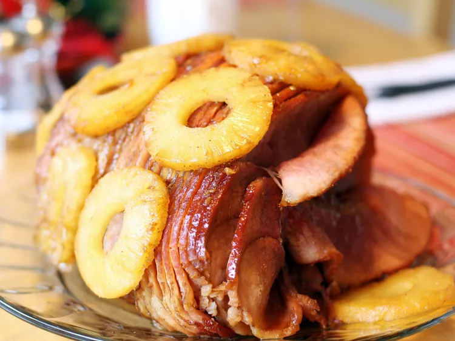

Honey-Glazed Ham

Succulent, slow cooked ham glazed with a blend of spices and sauces.
Ingredients
- 1 (10 pound) fully-cooked, bon-in ham
- 1 1/4 cups packed dark brown sugar
- 1/3 cup pineapple juice
- 1/3 cup honey, or more to taste
- 1/3 large orange
- 2 tablespoons Dijon mustard
- 1/4 teaspoon ground cloves
- 1 1/2 teaspoons lemon juice, or to taste
How to prepare
- Preheat the oven to 325 degrees F (165 degrees C). Place ham on rack set in a roasting pan.
- Bake uncovered in the preheated oven for 2 hours
- While the ham is baking, combine brown sugar, pineapple juice, and 1/3 cup honey in a saucepan. Zest orange into the saucepan, then squeeze in the juice. Add Dijon mustard and ground cloves; whisk mixture over medium-high heat as it comes to a boil. Reduce heat and simmer until glaze thickens slightly, 5 to 10 minutes.
- Taste glaze and adjust seasonings. Add lemon juice for more tang, or honey to make it sweeter. Set aside.
- Remove ham from oven after it has backed for two hours. Brush with glaze. Bake for an additional 30 to 45 minutes, brushing ham with glaze every 10 minutes.
- Serve hot and enjoy!